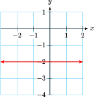
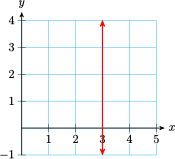

Section 9.1 Properties of Lines
Subsection Horizontal and Vertical Lines
The general form for a linear equation is
What happens if \(A = 0\text{?}\) For example, what does the graph of
look like? This equation tells us that every point on the line must have \(y\)-coordinate 3, but it puts no restrictions on the \(x\)-coordinates. For example,
are all solutions of the equation. These points lie on a horizontal line, as shown below left.
On the other hand, if \(B = 0\text{,}\) we have an equation such as
This equation tells us that any point with \(x\)-coordinate \(-2\) lies on the graph. For example, \((-2, 3)\) and \((-2, -1)\) are solutions. All the solutions lie on the vertical line shown above right.
Note that the horizontal line \(y = 3\) has \(y\)-intercept \((0, 3)\) but no \(x\)-intercept, and the vertical line \(x = -2\) has \(x\)-intercept \((-2, 0)\) but no \(y\)-intercept.
Horizontal and Vertical Lines.
-
The equation of the horizontal line passing through \((0, b)\) is
\begin{gather*} \blert{y=b} \end{gather*} -
The equation of the vertical line passing through \((a,0)\) is
\begin{gather*} \blert{x=a} \end{gather*}
Example 9.1.
Give the equation of each line.
- 
- 
This is a horizontal line with \(y\)-intercept \((0, -2)\text{,}\) so its equation is \(y = -2\text{.}\)
This is a vertical line with \(x\)-intercept \((3,0)\text{,}\) so its equation is \(x=3\text{.}\)
Now let's compute the slopes of the two lines in the previous Example. Choose two points on the graph of \(y=-2\text{,}\) say \((-5, -2)\) and \((4, -2)\text{.}\) Use these points to compute the slope.
The slope of the horizontal line \(y = -2\) is zero. In fact, the slope of any horizontal line is zero, because the \(y\)-coordinates of all the points on the line are equal. Thus
On a vertical line, the \(x\)-coordinates of all the points are equal. For example, two points on the line \(x = 3\) are \((3, 1)\) and \((3, 6)\text{.}\) Using these points to compute the slope, we find
which is undefined. The slope of any vertical line is undefined because the expression \(x_2-x_1\) equals zero.
Slopes of Horizontal and Vertical Lines.
The slope of a horizontal line is zero.
The slope of a vertical line is undefined.
Checkpoint 9.2. Practice 1.
Checkpoint 9.3. QuickCheck 1.
Subsection Parallel and Perpendicular Lines
Lines that lie in the same plane but never intersect are called parallel lines. They have the same "steepness" or inclination, so it is easy to understand that parallel lines have the same slope. You can verify that the parallel lines in the figure at right both have slope \(m = 2.\)
Perpendicular lines in a plane meet at right angles, or 90°. The relationship between the slopes of perpendicular lines is not so easy to see as the relationship for parallel lines. However, for the perpendicular lines shown at left, you can verify that
Note that the product of \(m_1\) and \(m_2\) is \(-1\text{,}\) that is,
This relationship holds for any pair of perpendicular lines. We summarize these results as follows.
Parallel and Perpendicular Lines.
-
Two lines are parallel if their slopes are equal, that is, if
\begin{gather*} \blert{m_1 = m_2} \end{gather*}or if both lines are vertical.
-
Two lines are perpendicular if the product of their slopes is \(-1\text{,}\) that is, if
\begin{gather*} \blert{m_1 m_2 = -1} \end{gather*}or if one of the lines is horizontal and one is vertical.
Another way to state the condition for perpendicular lines is
Because of this relationship, we often say that the slope of one perpendicular line is the negative reciprocal of the other.
Example 9.4.
Decide whether the lines
are parallel, perpendicular, or neither.
We could graph the lines, but we can't be sure from a graph if the line sare exactly parallel or exactly perpendicular. A more accurate way to settle the question is to find the slope of each line. To do this we write each equation in slope-intercept form; that is, we solve for \(y\text{.}\)
The slope of the first line is \(m_1=\dfrac{-2}{3}\text{,}\) and the slope of the second line is \(m_2=\dfrac{3}{2}\text{.}\) The slopes are not equal, so the lines are not parallel. However, the product of the slopes is
so the lines are perpendicular.
Checkpoint 9.5. Practice 2.
Checkpoint 9.6. QuickCheck 2.
Subsection Applications to Geometry
These relationships for the slopes of parallel and perpendicular lines can help us solve numerous geometric problems.
Example 9.7.
Show that the triangle with vertices \(A (0, 8)\text{,}\) \(B (6, 2)\text{,}\) and \(C (-4, 4)\) is a right triangle.
We will show that two of the sides of the right triangle are perpendicular. The line segment \(~\overline{AB}~\) has slope
and the segment \(\overline{AC} ~ \) has slope
Because
The sides \(\overline{AB}\) and \(\overline{AC}\) perpendicular, and therefore the triangle is a right triangle.
Checkpoint 9.8. Practice 3.
Example 9.9.
Find an equation for the line that passes through the point \((1, 4)\) and is perpendicular to the line \(4x -2y = 6\text{.}\)
First we find the slope of the desired line, then use the point-slope formula to write its equation. The line we want is perpendicular to the given line, so its slope is the negative reciprocal of \(m_1 = 2\text{,}\) the slope of the given line. Thus
Now we use the point-slope formula with \(m =\dfrac{-1}{2}\) and \((x_1, y_1) = (1, 4)\text{.}\)
The given line and the perpendicular line are shown in the figure on the above.
Checkpoint 9.10. Practice 4.
Exercises Problem Set 9.1
Warm Up
1.
-
Decide whether the slope of each line is positive, negative, zero, or undefined.
A \(\qquad\qquad\) B
C \(\qquad\qquad\) D
List the lines in order of increasing slope.
2.
Find the slope of each line.
\(\displaystyle 5x-4y=0\)
\(\displaystyle \dfrac{1}{3}x-\dfrac{3}{4}y=-2\)
\(\displaystyle 0.8x+0.004y=0.24\)
\(\displaystyle y=12=0\)
3.
In the table below, give the negative reciprocal for each number. Then find the product of each number with its negative reciprocal. What do you notice?
| Number | Negative reciprocal |
Their product |
| \(\dfrac{2}{3} \) | \(\dfrac{-3}{2} \) | \(\dfrac{2}{3}\left(\dfrac{-3}{2}\right)=-1 \) |
| \(\dfrac{-5}{2} \) | ||
| \(6 \) | ||
| \(-4\) | ||
| \(-1 \) |
4.
Find the slope of the line joining the points \((-6,-2)\) and \((4,1)\text{.}\)
Skills Practice
11.
The slopes of several lines are given below. Which of the lines are parallel to the graph of \(y = 0.75x + 2\text{,}\) and which are perpendicular to it?
\(\displaystyle m=\dfrac{3}{4}\)
\(\displaystyle m=\dfrac{8}{6}\)
\(\displaystyle m=\dfrac{-20}{15}\)
\(\displaystyle m=\dfrac{-39}{52}\)
\(\displaystyle m=\dfrac{4}{3}\)
\(\displaystyle m=\dfrac{-16}{12}\)
\(\displaystyle m=\dfrac{36}{48}\)
\(\displaystyle m=\dfrac{9}{12}\)
12.
In each part, determine whether the two lines are parallel, perpendicular, or neither.
\(y=\dfrac{3}{5}x-7 \text{;}\) \(\quad 3x-5y=2\)
\(y=4x+3 \text{;}\) \(\quad y=\dfrac{1}{4}x-3\)
\(6x+2y=1 \text{;}\) \(\quad x=1-3y\)
\(2y=5\text{;}\) \(\qquad 5y=-2\)
13.
Use your calculator to graph the equations \(y = 3x + 8\) and \(y = 3.1x + 6\) together in the standard window. Do you think the lines are parallel?
Find the slope of each line in part (a). Are the lines parallel?
Find the \(y\)-value for each equation when \(x = 20\text{.}\) What do your answers tell you about the two lines?
14.
- Use your calculator to graph the equations\begin{equation*} y=0.625x-3~~~~\text{and}~~~~y=-1.6x+2 \end{equation*}together in the standard window. Do the lines appear to be perpendicular?
- Find the slope of each line in part (a). Are the lines perpendicular?
Applications
15.
Sketch the triangle with vertices \(P(-1, 3)\text{,}\) \(Q(-3, 8)\text{,}\) and \(R(4, 5)\text{.}\)
Show that the triangle is a right triangle. (Hint: Find the slope of each side of the triangle.)
16.
Sketch the quadrilateral with vertices \(P(2,4)\text{,}\) \(Q(3, 8)\text{,}\) and \(R(5,1)\text{,}\) and \(S(4,-3)\text{.}\)
Show that the quadrilateral is a parallelogram. (Hint: What should be true about the slopes of the opposite sides of the parallelogram?)
17.
Put the equation \(~2y- 3x = 5~\) into slope-intercept form, and graph the equation.
What is the slope of any line that is parallel to \(2y -3x = 5\text{?}\)
On your graph for part (a), sketch by hand a line that is parallel to \(2y - 3x = 5\) and passes through the point \((-3, 2)\text{.}\)
Use the point-slope formula to write an equation for the line that is parallel to the graph of \(2y - 3x = 5\) and passes through the point \((-3, 2)\text{.}\)
18.
Put the equation \(~2y- 3x = 5~\) into slope-intercept form, and graph the equation.
What is the slope of any line that is perpendicular to \(2y -3x = 5\text{?}\)
On your graph for part (a), sketch by hand a line that is perpendicular to \(2y - 3x = 5\) and passes through the point \((1,4)\text{.}\)
Use the point-slope formula to write an equation for the line that is perpendicular to the graph of \(2y - 3x = 5\) and passes through the point \((1,4)\text{.}\)
19.
Two of the vertices of rectangle \(~ABCD~\) are \(A(-5, 2)\) and \(B(-2, -4)\text{.}\)
Find an equation for the line that includes side \(\overline{AB}.\)
Find an equation for the line that includes side \(\overline{BC}.\)
20.
Sketch the triangle with vertices \(A(-5, 12)\text{,}\) \(B(4,-2)\text{,}\) and \(C(-1,6)\text{.}\)
Find the slope of the side \(\overline{AC}.\)
Find the slope of the altitude from point \(B\) to side \(\overline{AC}.\)
Find an equation for the line that includes the altitude from point \(B\) to the side \(\overline{AC} \text{.}\)
21.
The center of a circle is the point \(C(2, 4)\text{,}\) and \(P(-1, 6)\) is a point on the circle. Find the equation of the line tangent to the circle at the point \(P\text{.}\) (Hint: Recall that the tangent line to a circle is perpendicular to the radius at the point of tangency.)
22.
Show that the line passing through the points \(A(0,-3)\) and \(B\left(3,\dfrac{1}{2}\right)\) also passes through the point \(C(-6,-10)\text{.}\)